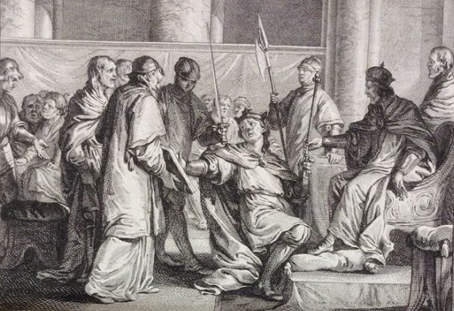
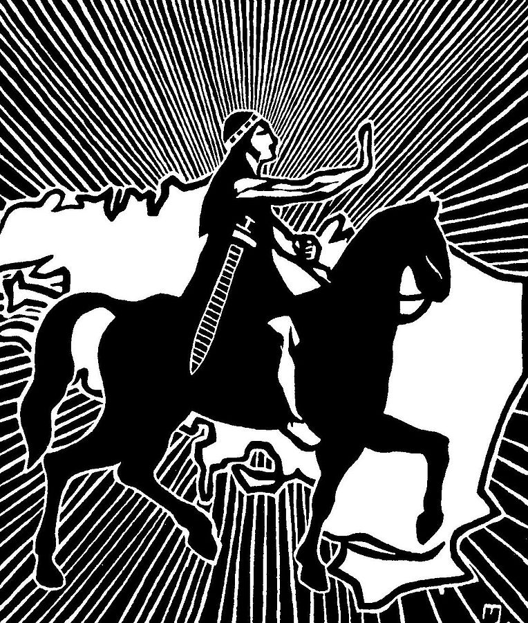
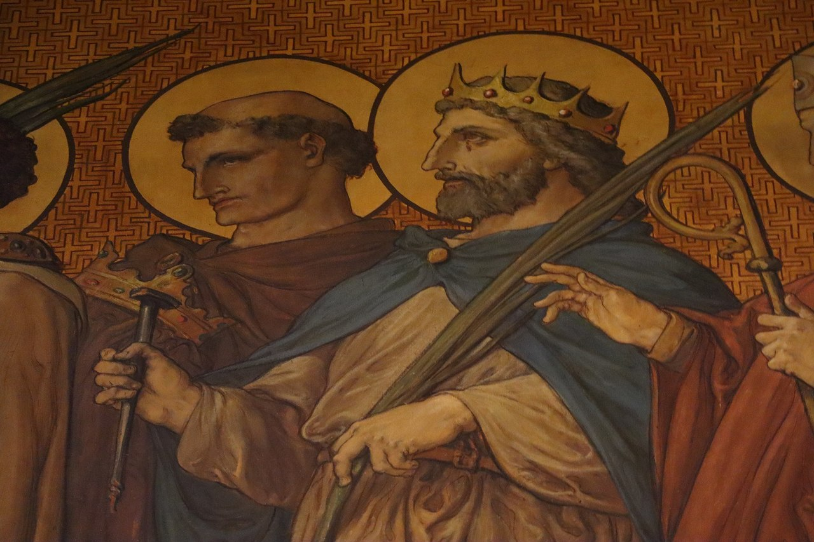
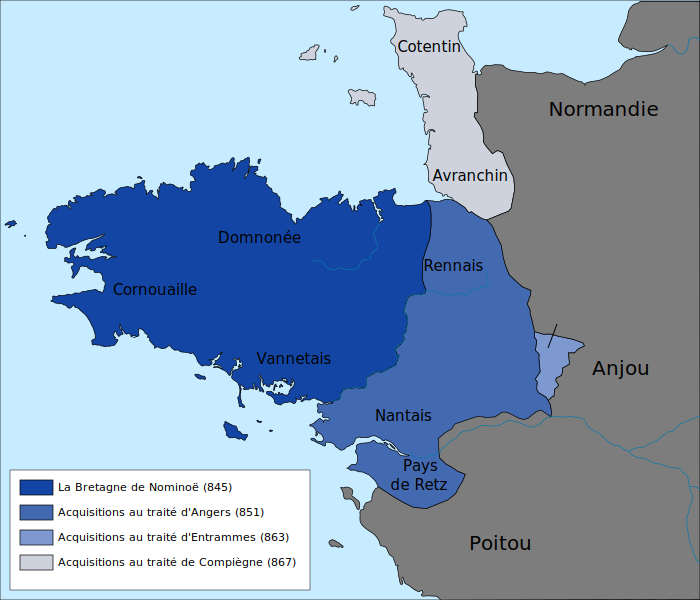

Le Royaume de Bretagne (Rouantelezh Breizh), a été fondé en 849 après le Couronnement de Nominoë à Dol de Bretagne. Le Royaume sera ensuite sous possssion de son fils Erispoë puis du Roi Salomon de Bretagne. Des guerres de Succession lui feront tomber en 907 au profit du Duché de Bretagne fondé en 939. Le dernier Roi de Bretagne sera Alain Ier de Bretagne. Le premier duc est son petit-fils Alain II de Bretagne.
 |
 |
 |
| Nominoë |
Espiroë |
Alain Ier de Bretagne |
Nominoë, comte de Vannes, profite des incursions vikings en Francie Occidentale pour réunir les comtés de Cornouaille, Vannes et Domnonée. Dans un élan des marches de Bretagne, il reprend au nom de la Bretagne les villes de Rennes et Nantes. Il se fait reconnaître souverain de Bretagne par le pape, pour être sacré officielement par l'archevêque de Dol, et fait de ses contés un seul et même royaume, le Royaume de Bretagne.
|  |
 |
 |
| Nominoë de Bretagne |
Marches de Bretagne |
Blason de la Ville de Dol |
L'appogée du Royaume de Bretagne est sous le Roi Salomon de Bretagne. Les annexions de Salomon à l'est du pays et au Nord avec l'annexion de l'Avranchin et du Cotentin aux Francs pour ne pas qu'ils tombent aux mains de la Normandie, font en 867, l'expension maximale du Royaume. La flotte viking normande sera majoritairement coulée par le Royaume de Bretagne à cette époque. Ces conquêtes seront plus tard récupérées en partie par le Royaume de France, mais on y retrouve encore aujourd'hui des restes de la culture celtique bretonne de cette époque.
|  |
 |
 |
| Salomon de Bretagne |
Carte du Royaume de Bretagne |
Blason de la Bretagne |